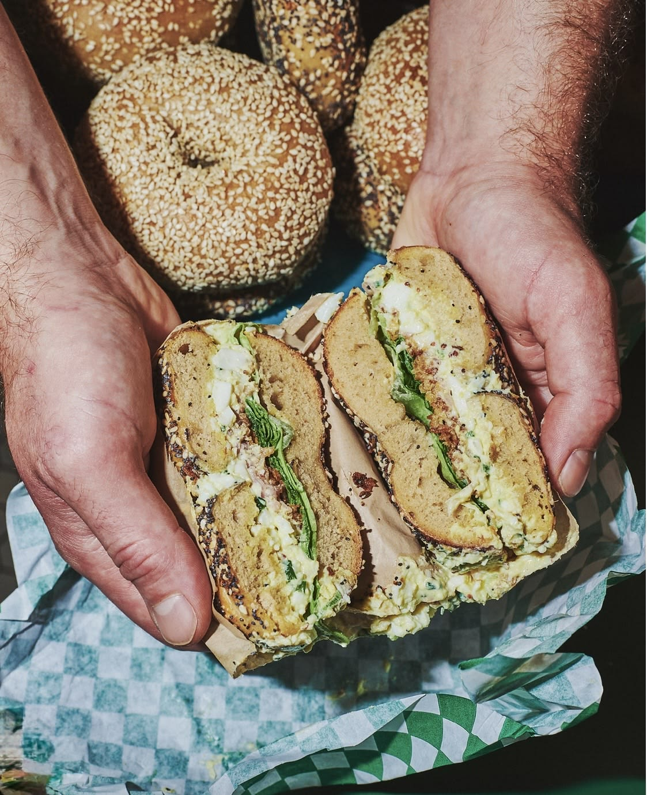

Buckley's Bagels is founded upon a mission to provide quality breakfeast food for the working class of America. In 2026, I realized that every bagel store in my area closed before 2:00pm, before I got off work. I thought "What a shame. Shouldn't there be a spot that is designed for the 9-5 workers like me?" So I created Buckley's Bagels, where we are open 5:00am-7:00pm.
We pride ourselves on our world famous dough, made fresh in-house daily! There are no artifical flavors or preservatives ever in our recipies, which makes our bagels a cut above the rest. Additionally, I wanted to serve the workers of America by keeping prices reasonable. We take personal deficits in company profit to maintain competetive pricing. Fun fact: our plain bagel is the cheapest available in San Luis Obispo County at $2.00!
Buckley's Bagels upholds our mission thrugh the integrity of our staff. Growing up, I worked at a local bakery, so I know first hand how demanding and exausting the food industry can be. That's why I have made it my goal to have healthy and happy staff. Employees recive competetive pay, above the minimum wage for our county. On top of that, we allot extra breaks and vacation time in our contract to maintain the happiness of our staff.
My favorite aspect of our store is the community. The people of San Luis Obispo are what make this small business into a small family. From myself, the staff, and the communitty, we hope you choose to stop by Buckley's Bagels, we would love to have you!